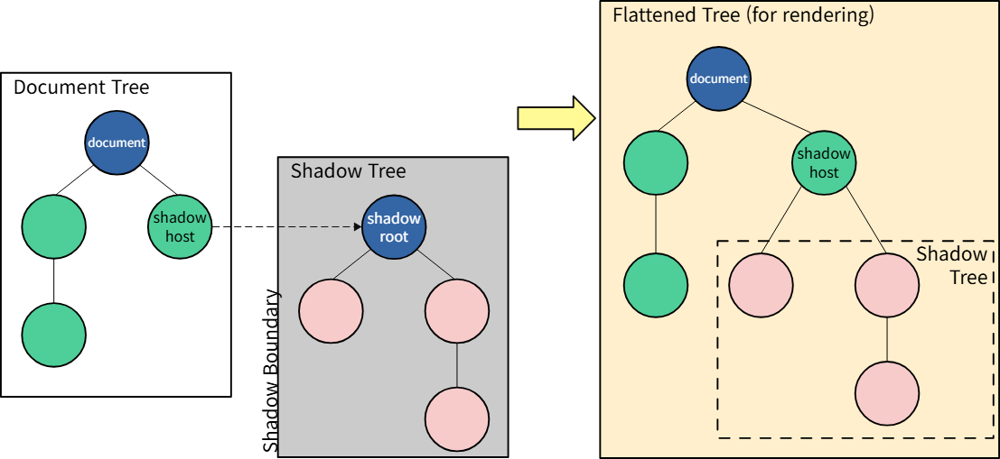

[podoR] 2. 프로젝트 첫 주차에 알게된 점들 (w. SpEL, Hydration Mismatch, 이벤트 재타게팅)
프로젝트 개발을 진행하는 첫 한 주동안, 새롭게 배운 점들을 공유하고자 한다.
Spring 관련
- application.yml의
server.servlet.contextPath에 특정 URL을 설정하면, 해당 URL이 prefix처럼 동작 - Spring Security의 기본 redirect uri 구조는
${URL}/login/oauth2/code/${플랫폼}임 - Spring Security 6 이후로(정확히는 5.5인듯? CLIENT_SECRET_POST가 5.5부터 나옴)
spring.security.oauth2.client.registration.${플랫폼}.client-authentication-method에POST대신client_secret_post를 사용해야 함. - Spring에서 static
log(logger객체)를 통해 로그를 찍기 위해서는, 이를 사용할 컨트롤러에@log4j,@Slf4j와 같은 lombok의 애너테이션을 달아주면log객체를 사용할 수 있음
SpEL(Spring Expression Language)
// 1. XML based
<bean id="numberGuess" class="org.spring.samples.NumberGuess">
<property name="randomNumber" value="#{ T(java.lang.Math).random() * 100.0 }"/>
<!-- other properties -->
</bean>
// 2. Annotation based
public static class FieldValueTestBean
@Value("#{ systemProperties['user.region'] }")
private String defaultLocale;
public void setDefaultLocale(String defaultLocale)
{
this.defaultLocale = defaultLocale;
}
public String getDefaultLocale()
{
return this.defaultLocale;
}
}
- 6. Spring Expression Language (SpEL)
- 런타임 시
객체 그래프(object graph)를 쿼리하고 조작할 수 있는 표현식 언어 기술 중립적인(agnostic) API를 기반으로 하여, OGNL, MVEL, JBoss EL 등 다른 표현식 언어 구현체들과통합(integrate)할 수 있음XML및애너테이션모두에서 사용 가능함
SpringSecurity / OAuth2 관련
OAuth2User: OAuth2 로그인 후 인증된 사용자의 정보를 담는 인터페이스로,Map<String, Object>형태의Attribute로 사용자 정보를,String형태의Name으로 식별자를 가짐(권한 목록인getAuthorities도 있음)@EnableMethodSecurity(구@EnableGlobalMethodSecurity):메서드 수준에서의 권한 모델링- 만약, 특정 도메인에 관한 모든 작업(ex.
/{도메인}/{자원ID})이 권한이 필요하다면,SecurityFilterChain에서authorizeHttpRequests(... authorize .requestMatchers("/endpoint").hasAuthority("USER"))와 같은 형태로요청 기반의 권한 모델링 하면 됨
- 만약, 특정 도메인에 관한 모든 작업(ex.
FE 관련
Next 관련
client componentsvsserver componentsclient components를 사용해야 할 때state또는이벤트 핸들러(ex.onClick,onChange)가 필요할 때생애주기 로직(ex.useEffect)을 사용해야 할 때브라우저단-전용 API(ex.localStorage,window, …)가 필요할 때Custom Hooks가 필요할 때
server components를 사용해야 할 때- 데이터 소스와 가까이 위치한
DB또는API로부터 데이터를fetch해야할 때 API 키,토큰등비밀 정보를 client에 노출하지 않고 사용해야 할 때- 브라우저로 전송되는 Javascript 양을 줄여야 할 때 (즉, 미리 데이터를 HTML에 박아놔서 그걸 렌더링하는 스크립트를 줄여야 할 때)
FCP(최초 콘텐츠풀 페인트)를 개선하고, 콘텐츠를 클라이언트에점진적으로 전송(stream)해야 할 때FCP: 브라우저가DOM 콘텐츠의 가장 첫 조각(비트)를 렌더링하여, 사용자에게 ‘페이지가 실제로 로드되고 있음’을 인식시키는데 걸리는 시간
- 데이터 소스와 가까이 위치한
-
- 서버 측
server component는RSC Payload(React Server Component Payload)라는 특수한 데이터 형식으로 렌더링RSC Payload: 렌더링된Server Component트리를 압축된 Binary 형식으로 표현한 것으로, 클라이언트 측 React에서 브라우저 DOM 업데이트 하는데 사용server component렌더링 결과client component가 렌더링 되어야 할 위치자리표시자(Placeholder)및해당 Javascript 파일에 대한 참조server component->client component측으로 전달된 모든props
클라이언트 컴포넌트와RSC Payload는 HTML을 사전-렌더링 하는데 사용
- 클라이언트 측
HTML을 사용하여 해당 라우트의비-상호작용 프리뷰를 즉시 표시RSC Payload를 사용해Client및Server component트리를 동기화Javascript를 사용해Client Component를 Hydrate하고, 상호작용 가능하도록 만듦
- 서버 측
hydration 불일치- Zustand persist와 같이,
브라우저 Storage에서 데이터를 불러와 이를 바탕으로 화면을 렌더링하는 경우- 서버에서 렌더링하여 보낸 HTML 화면
- 클라이언트에서 HTML을 받아와 React 코드 실행해 렌더링 (
Hydration)
- 위 두가지 화면이 불일치하는,
Hydration Mismatch (하이드레이션 에러)문제가 발생하게 됨
- 이를 막기 위해,
마운트 가드(Mount Guard)라는 패턴을 사용- 브라우저에 화면이 완전히 붙을 때(Mount)까지는 서버와 똑같이 ‘기본 상태(
빈 화면이나스켈레톤 UI)‘를 보여주고, 브라우저 로드가 끝난 직후에 스토리지를 읽은 진짜 상태를 보여주는 방식 - 마운트 가드를 페이지 전체에 적용할 경우, SEO가 불가능하므로, 하이드레이션이 이뤄지는
부분 컴포넌트에 대해서만 마운트 가드를 씌움 - 또한, 인가, 권한 등이 필요한 페이지(ex. 마이 페이지, 결제 내역 등)의 경우 애초에 SEO가 필요 없으므로
마운트 가드를페이지 전체에 씌워도 상관 없음
- 브라우저에 화면이 완전히 붙을 때(Mount)까지는 서버와 똑같이 ‘기본 상태(
- 만약, 서버 사이드에서, 클라이언트 측 데이터를 바탕으로 Hydration된 HTML을 만들어야 한다면 요청 헤더(및 쿠키)를 통해 필요한 데이터를 전송하고, 그를 바탕으로 렌더링하게 해야 함
- Zustand persist와 같이,
런타임에환경변수 주입하기- 빌드 타임에 환경변수를 주입한다면?
- 환경변수 변동 생길경우, 환경별(Dev, Prod, …)로 빌드 매번 다시 수행
Client-side/Server-side에 따라 환경 변수 구분 필요- Server-side에서 필요한 민감정보는 Client 측에 노출되지 않아야 하므로,
Client-side/Server-side에서 필요한 환경변수를 구분해서 저장하는것이 필요
- Server-side에서 필요한 민감정보는 Client 측에 노출되지 않아야 하므로,
- 빌드 타임에 환경변수를 주입한다면?
JS / HTML 관련
elem.setPointerCapture(pointerId)pointerId를 갖는 이벤트를elem에 바인딩pointerId:PointerEvent이벤트를 발생시킨 포인터에 할당된 식별자로, 포인팅 장치에 대한 고유 식별자를 뜻함.
- 이렇게 하면, 동일한
pointerId를 갖는 모든 포인터 이벤트는, 실제 발생 위치와 상관없이 대상으로elem을 가짐(즉,elem에서 일어난 것처럼 처리) - 주로 요소에 대한 드래그를 놓치지 않기 위해 사용
이벤트 재타게팅Javascript에는 두 가지 종류의이벤트 재타게팅이 있음
**마우스 이벤트**의 타겟 설정 규칙으로 인한재타겟팅- 브라우저가 클릭,더블 클릭과 같은 이벤트를 온전히 인식하려면, 마우스를 누를 때(
pointerdown)와 뗄 때(pointerup)의target이 같아야 함.- 만약 캡처링 등의 문제로 둘의 target이 달라질 경우, 브라우저는 “두 요소의 가장 가까운 공통 조상에게 이벤트를 전달한다"라는 규칙을 따름
// 1. W3C의 Pointer Events에 대한 Working Draft Each implementation will determine the appropriate hysteresis tolerance, but in general SHOULD fire click and dblclick events when the event target of the associated mousedown and mouseup events is the same element with no mouseout or mouseleave events intervening, and SHOULD fire click and dblclick events on **the nearest common inclusive ancestor** when the associated mousedown and mouseup event targets are different. (각 구현체는 적절한 히스테리시스 허용 오차(흔들림 등의 이유로 발생한, 마우스를 누르고 떼는 위치의 차이)를 결정하지만, 일반적으로 `mousedown` 및 `mouseup` 이벤트의 대상이, `mouseout` 또는 `mouseleave` 이벤트가 개입되지 않은 상태에서, 그 둘이 동일 요소일 경우 `click` 및 `dblclick` 이벤트를 발생시켜야 한다. 또한, `mousedown` 및 `mouseup` 이벤트의 대상이 서로 다를 경우 **가장 가까운 공통 상위 조상 요소**에서 `click` 및 `dblclick` 이벤트를 발생시켜야 한다.) 출처: [Pointer Events](https://www.w3.org/TR/pointerevents/#mouse-event-order)// 2. whatwg의 DOM 스펙 To retarget an object A against an object B, repeat these steps until they return an object: If one of the following is true A is not a node (A가 노드가 아니거나) A’s root is not a shadow root (A의 루트가 Shadow root가 아니거나) B is a node and A’s root is a shadow-including inclusive ancestor of B (B가 노드이고, A의 루트가 B의 shadow를 포함하는 포괄적인 조상인 경우) then return A. (A를 반환한다) Set A to A’s root’s host. (A를 A의 루트의 호스트로 설정한다) [DOM Standard](https://dom.spec.whatwg.org/#retarget)
- 브라우저가 클릭,더블 클릭과 같은 이벤트를 온전히 인식하려면, 마우스를 누를 때(
Web Components에서의이벤트 재타게팅Web Components: HTML상에서 재사용가능한커스텀 UI를 생성 및 활용할 수 있도록 돕는 기술의 집합Custom Element: 사용자 정의 요소 및 그들의 동작을 정의할 수 있게 해주는 Javascript API 모음Shadow DOM: 요소에 캡슐화된Shadow DOM 트리를 연결 및 제어하기 위한 Javascript API 모음HTML Templates:<template>및<slot>요소를 통해 페이지에 표시되지 않은 마크업 템플릿을 작성할 수 있음
- 그 중,
Shadow DOM이 이이벤트 재타게팅과 관련 있음커스텀 엘리먼트의 중요 특징 중 하나인캡슐화를 지키기 위해, 페이지 내 코드가커스텀 엘리먼트의 내부 구현을 수정해 손상시키지 않도록 해야 함.- 이때,
Shadow DOM을 사용하면, 요소를 DOM 트리에 연결하되, 트리의 내부구조는 페이지 내 Javascript 및 CSS 코드로부터 숨길 수 있음.
- 즉, DOM 트리에는
shadow host만 드러나있고,shadow host를root로 하는Shadow DOM 트리는 숨겨져 있는 형태임. (추후 렌더링시에는 합쳐짐)
- 하지만 이렇게 해도,
Shadow DOM 트리내부 요소에서 발생한 이벤트가버블링될 경우,Shadow DOM 트리외부 요소가 이들의 존재를 알 수 있음.- 따라서, 이를 막고자
Shadow DOM 트리내부에서 발생한 이벤트가 버블링되어 상위로 전달될 때,Shadow DOM Boundary를 넘으면Event.target의 값이 리스너의 스코프에 맞춰 변경됨.- 즉, 상위 요소의 리스너의 스코프에서는
Shadow DOM 트리내부 요소를 알 수 없으므로,Shadow DOM 트리에서 유일하게 외부에 노출된 요소인shadow host로 target이 변경됨.
- 즉, 상위 요소의 리스너의 스코프에서는
- 이를
이벤트 재타게팅이라고 함. - 이러한
이벤트 재타게팅의 대표적인 예시가<video>요소임- DOM에서는
<video>요소만 보이지만, 실제로 렌더링 될때는 비디오 재생에 필요한 일련의 버튼 및 제어용 UI들이 포함되어 있음.
- DOM에서는
- 따라서, 이를 막고자
Mocking 관련
- Service Worker파일(mswServiceWorker.js)의 경우, 브라우저단에서 직접 접근해 등록하는 파일이므로 정적 서빙이 필요함
- 그래서
public/폴더에 넣음
- 그래서
worker와serverworker(setupWorker):클라이언트-워커 통신 채널을 준비하여, 브라우저단에서의 API Mocking을 가능하도록 함server(setupServer): 서비스 워커가 실행될 수 없는Node.js환경에서의 동일한 요청 핸들러를 적용하기 위한 브릿지http와 같은 표준 요청 모듈을 확장해, 외부로 전송되는 요청에 반응(react)Node.js환경 기반이므로location,localStorage와 같은 브라우저 전용 API는 사용할 수 없음
DB 관련
PostgreSQL
- PostgreSQL 파티셔닝 환경에서 복합 PK + bigserial의 함정: 1,100건의 중복 키 장애 분석과 복구
- PK(A, B) (복합 키) != B가 유일하다
- BigSerial과 조합시 중복 가능성 존재
- 가령, (시간, BS)를 복합키로 잡았을 경우, BS 값이 파티셔닝, 캐시 동시 참조 등의 이유로 인해 중복될 수 있음
- 파티션 키는 PK의 일부일 필요가 없다
- PK(A, B) (복합 키) != B가 유일하다